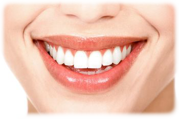
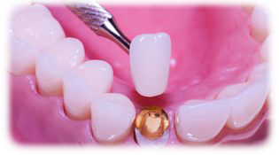

Estética

Blanqueamiento
El blanqueamiento dental es un tratamiento de odontología estética que tiene por objetivo eliminar las manchas dentales y hacer que la dentición adquiera una tonalidad más blanca y brillante. La actual popularidad de la estética ha convertido a este procedimiento odontológico en uno de los más solicitados de los últimos años.
Es de especial importancia que los dentistas estén capacitados para el manejo de los agentes blanqueadores, siguiendo un protocolo adecuado de diagnóstico, planificación del procedimiento y mantenimiento de los resultados. Por ello, es vital que el profesional conozca a fondo tanto las indicaciones como las contraindicaciones de las técnicas de blanqueamiento dental para poder transmitírselas a los pacientes.
Por otro lado, la población debe concebir este tratamiento como un proceso médico que ha de ser realizado bajo la supervisión de un dentista, y únicamente realizado en la clínica dental.
Carillas Dentales
Las carillas son unas láminas finas que cubren la parte frontal de los dientes. Es un tratamiento estético que sirve para disimular defectos en la coloración de los dientes o desperfectos en los mismos. Existen dos tipos de carillas las de composite y las de disilicato de litio.
Las carillas de composite son hechas con una resina sintética que se adhiere al diente y es moldeado y trabajado en el propio diente. Está indicado para cuando existe alguna pequeña anomalía en los dientes. Es una solución económica, cuando la zona a restaurar es pequeña o no muy amplia, y rápida, en una sesión se puede colocar las carillas. Cada diente se debe realizar por separado y en ocasiones hay que retocar el diente original.


Coronas de zirconio
La corona de zirconio es una funda dental hecha con un material que está compuesto por cerámica y es uno de los productos más demandados actualmente por los pacientes, ayuda en la rehabilitación de la boca. Además, es una gran solución estética para los usuarios de este tratamiento.
Por otra parte, los beneficios que ofrecen las coronas de zirconio en comparación con el metal o la porcelana, que son los que se solían utilizar, son mucho mejor para la salud bucodental.